Getting Started#
The following sections provide the information required to run BuckPy.
Running BuckPy as a User#
Create a working directory for the BuckPy simulation.
Navigate to the examples folder in the BuckPy repository. Copy one of the example input data excel files into the working directory. All output files and figures generated during the simulation will be saved in this directory.
From a windows terminal opened in the working directory, create and activate a virtual environment, install BuckPy, and launch the application:
$ python -m venv .venv $ .\.venv\Scripts\activate $ pip install buckpy $ buckpy
It is important to install BuckPy inside the virtual environment. Installing it globally may interfere with other Python scripts or libraries already present on your system.
The BuckPy graphical user interface (GUI) will open. From here, you can select the input Excel file and configure the simulation parameters. For additional details, visit the section: Data to be Modified in the GUI of BuckPy.
How to Clone BuckPy to become a Maintainer#
Clone the BuckPy repository to your computer. The structure of the cloned repository is as follows:
1.1. docs: This folder contains the Sphinx documentation and scripts used to generate Buckfast input and output files from the BuckPy input file.
The main menu of the Sphinx documentation can be access by openinng the following file in the folder .//docs//_build//html:
index.html
The two Python scripts used to write Buckfast input and output files are located in: .//docs//_static//buckfast file writers:
buckfast_input_file_writer.pybuckfast_output_file_compiler.py
1.2. buckpy: This folder contains the main application file and core modules:
Initialisation package script
__init__.py
Main script
buckpy.py
Supporting modules
buckpy_gui.pybuckpy_preprocessing.pybuckpy_solver.pybuckpy_postprocessing.pybuckpy_variables.pybuckpy_visualisation.py
1.3. examples: This folder contains sample input files and templates for running BuckPy simulations.
Input data Excel templates
inputDataTemplateA.xlsx: Pipeline with rogue buckles only.inputDataTemplateB.xlsx: Pipeline with simple sleepers.inputDataTemplateC.xlsx: Pipeline with RCM route type.
1.4. LICENSE: Contains the GNU General Public License v3.0 under which BuckPy has been released.
1.5. README: The main repository description and usage overview.
How to Modify the Design Data?#
Data to be Modified in the GUI of BuckPy#
The following variables have to be updated in
buckpy.py:
Select Excel input file: A dialog will open to select the Excel input file. The output file and plot will also be stored in this directory.
PIPELINE_ID: Pipeline of the input file to be analysed.
SCENARIO_ID: Pipeline scenario or sensitivity to be analysed. Multiple scenarios can be defined and will be run in a batch process (comma-separated).
FRIC_SAMPLING: Lateral breakout friction factor sampling method . (0 ‘per Element’ or 1 ‘per OOS Reference Length’).
PROB_EXCEED_CHAR_FRIC: Probability of exceedance among the lateral breakout friction factors of the lateral buckles used to define the Characteristic Friction Factor.
BL_VERBOSE: True or False flag to select whether the information on how the script progresses needs to be printed out in the terminal.
The following image has been taken from the GUI of buckpy.py to illustrate how the previous variables actually look in the script:

Data to be Modified in inputFileTemplate.xlsx#
The Excel file provided in the repository (
inputFileTemplate.xlsx) contains a design data template of the information required to run BuckPy. The template information then has to be replaced by the project specific data. The design data template Excel file has the following tabs:
Scenario: Different scenarios (or sensitivities) can defined in this tab. Different pipelines, routes, pipe properties, operating properties and number of simulations can be defined for each scenario. Each scenario needs to be defined in a new row. There is no limit in the number of scenarios that can be defined.
Pipeline: The identifier of the pipeline.
Scenario: The identifier of the scenario.
Layout Set: The identifier of the layout set.
Loadcase Set: The identifier of the loadcase set.
Simulations: The number of simulations.
Friction Sampling: The method for sampling the lateral breakout friction factor (i.e. 0 ‘per Element’ or 1 ‘per OOS Reference Length’).
Char. Friction Prob.: The probability of exceedance among the lateral breakout friction factors.
Scenario Description: The description of each simulation scenario.

Route: Different route layout sets are defined in this tab. Multiple sections can be defined (Spool, Straight, Bend, Sleeper or RCM) per route layout. Different pipe properties, friction factors, HOOS factors and residual buckle force and length can be defined for each section. Routes can be grouped by pipelines (multiple pipelines can be defined).
Pipeline: The identifier of the pipeline.
Layout Set: The identifier of the layout set.
Pipe Set: The identifier of the pipeline set.
Friction Set: The identifier of the friction set.
Route Type:
If Point ID From or Point ID To is Start or End, the available route types are Spool and Fixed.
Elsewhere, the available route types are Straight, Bend, Sleeper and RCM.
Point ID From: The identifier of the start of the pipeline section.
Point ID To: The identifier of the end of the pipeline section.
KP From: The KP of the start of the pipeline section in the unit of m.
KP To: The KP of the end of the pipeline section in the unit of m.
Bend Radius: The radius of the pipeline section with route type of ‘Bend’ in the unit of m.
Sleeper Height: The height of the sleeper of the pipeline section with route type of ‘Sleeper’.
RCM Buckling Force: The mean of buckling force of the pipeline section with residual curvature.
HOOS Mean: The mean of the HOOS distribution. When the route type is RCM, the HOOS mean needs to be equal to 1.0.
HOOS STD: The standard deviation of the HOOS distribution. When the route type is RCM, HOOS STD needs to be equal to the coefficient of variation (COV) of the CBF, where the COV is defined as the ratio between the STD and the mean of the CBF.
HOOS Reference Length: The reference length of the HOOS distribution in the unit of m.
Residual Buckle Force Hydrotest: The residual buckling force during hydrotest in the unit of N.
Residual Buckle Length Hydrotest: The residual buckling length during hydrotest in the unit of m.
Residual Buckle Force Operation: The residual buckling force during operation in the unit of N.
Residual Buckle Length Operation: The residual buckling length during operation in the unit of m.
Reaction Installation: The reaction force during installation in the unit of N. The sign convention is that all forces are compression positive and tension negative.
Reaction Hydrotest: The reaction force during hydrotest in the unit of N.
Reaction Operation: The reaction force during operation in the unit of N.
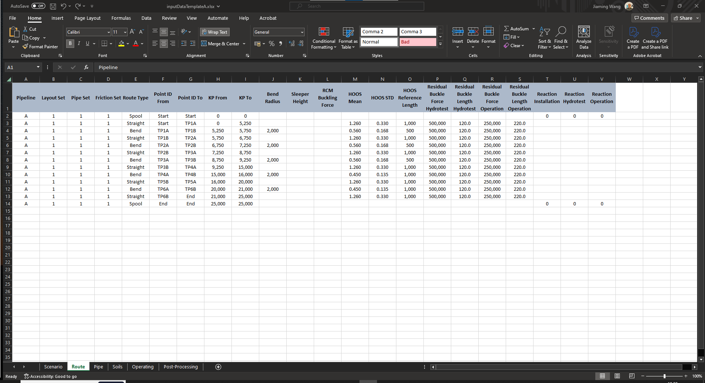Pipe: Different pipe properties are defined in this tab. Pipe properties are grouped by pipelines and pipe sets (multiple pipe sets can be defined per pipeline).
Pipeline: The identifier of the pipeline.
Pipe Set: The identifier of the pipeline set.
OD: The outer diameter in the unit of m.
WT: The wall thickness in the unit of m.
E: The Young’s modulus in the unit of Pa.
Poisson: The Poisson ratio.
Alpha: The thermal expansion.
sw Empty: The submerged weight for the empty pipeline in the unit of N/m.
sw Installation: The submerged weight during installation in the unit of N/m.
sw Hydrotest: The submerged weight during hydrotest in the unit of N/m.
sw Operation: The submerged weight during operation in the unit of N/m.
Pipe Description: The description of the pipeline material properties.
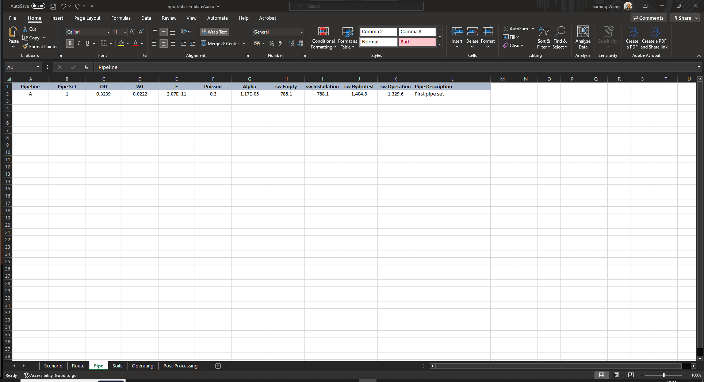Soils: The LE(P95), BE(P50), and HE(P5) of the axial residual and lateral breakout friction factors are defined in this tab. Different lateral breakout friction factors can be specified for hydrotest and operating conditions. For each friction factor, the bounds used to determine the lognormal fit are defined (LE_BE, BE_HE or LE_BE_HE). Using any of the three bound combinations, BuckPy calculates the mean and standard deviation (STD) of the lognormal fit that minimises the root-mean-square error (RMSE). Friction factors can be grouped also by pipeline and friction set.
Pipeline: The identifier of the pipeline.
Friction Set: The identifier of the friction set.
Axial LE: LE of the axial friction factor, assumed to have a 95% probability of exceedance (P95).
Axial BE: BE of the axial friction factor, assumed to have a 50% probability of exceedance (P50).
Axial HE: HE of the axial friction factor, assumed to have a 5% probability of exceedance (P5).
Axial Fit Bounds: The bounds used to determine the lognormal fit for the axial friction factor (LE_BE, BE_HE or LE_BE_HE).
Lateral Hydrotest LE: LE of the lateral hydrotest friction factor (P95).
Lateral Hydrotest BE: BE of the lateral hydrotest friction factor (P50).
Lateral Hydrotest HE: HE of the lateral hydrotest friction factor (P5).
Lateral Hydrotest Fit Bounds: The bounds used to determine the lognormal fit for the lateral hydrotest friction factor (LE_BE, BE_HE or LE_BE_HE).
Lateral Operation LE: LE of the lateral operation friction factor (P95).
Lateral Operation BE: BE of the lateral operation friction factor (P50).
Lateral Operation HE: HE of the lateral operation friction factor (P5).
Lateral Operation Fit Bounds: The bounds used to determine the lognormal fit for the lateral operation friction factor (LE_BE, BE_HE or LE_BE_HE).
Soil Description: The description of the soil friction properties.
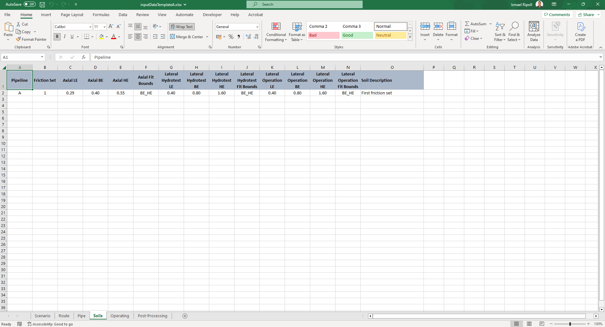Operating: Installation, hydrotest and operating pressures and temperatures and RLT are specified in this tab. This tab in turn is used to define the KPs (or elements) in which the pressure, temperature and RLT will be interpolated. Operating conditions can be grouped by pipeline and loadcase set.
Pipeline: The identifier of the pipeline.
Loadcase Set: The identifier of the loadcase set.
KP: The Kilometer Point in the unit of m.
Pressure Installation: The pressure during installation in the unit of Pa.
Pressure Hydrotest: The pressure during hydrotest in the unit of Pa.
Pressure Operation: The pressure during operation in the unit of Pa.
Temperature Installation: The temperature during installation in the unit of Celsius Degree.
Temperature Hydrotest: The temperature during hydrotest in the unit of Celsius Degree.
Temperature Operation: The temperature during operation in the unit of Celsius Degree.
RLT: The Residual Lay Tension in the unit of N (Negative Value).
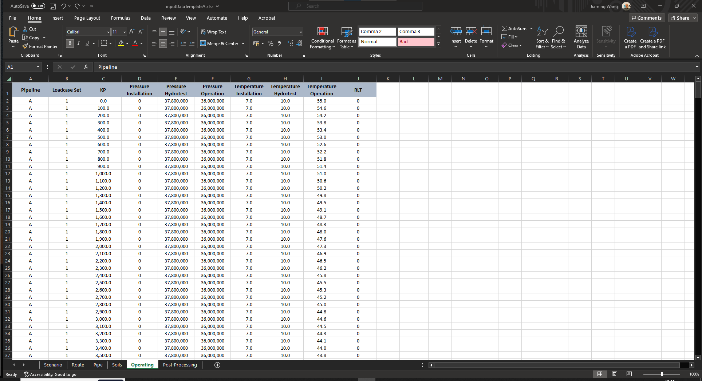Post-Processing: This tab defines the sets that will be used by BuckPy to define the characteristic VAS and friction along the pipeline route. Post-processing sets can be grouped by pipeline and layout sets (route sets).
Pipeline: The identifier of the pipeline.
Layout Set: The identifier of the layout set.
Post-Processing Set: The identifier of the post-processing set.
KP From: The KP of the start of the pipeline section in the unit of m.
KP To: The KP of the end of the pipeline section in the unit of m.
Characteristic VAS Probability: The probability of exceeding characteristic VAS.
Post-Processing Description: The description of the post-processing sets.

Which Output Data is Generated by BuckPy?#
Output Excel file#
The name of the output Excel file will follow the convention
{INPUT_FILE_NAME}_{PIPELINE_ID}_scen{SCENARIO_ID}_outputs.xlsx. For instance,inputFileTemplate_A_scen1_outputs.xlsx. The output Excel file has the following tabs:
Elements: This tab contains the probability of buckling, stochastic VAS and lateral friction factor outputs. It also contains the Characteristic VAS and Friction of the Buckles. This information is grouped by based on the KP (elements) of the Operating tab of the template excel file.
Centroid of the Element (m): The KP value of the element centroid in the unit of m.
Number of Simulations with a Buckle: The number of simulations with a buckle.
Probability of Buckling: The probability of buckling in the simulation.
Probability of not Buckling: The probability of not buckling in the simulation.
Mean of the VAS (m): The mean of the VAS in the unit of m.
Standard Deviation of the VAS (m): The standard deviation of the VAS in the unit of m.
Minimum VAS (m): The minimum of the VAS in the unit of m.
Maximum VAS (m): The Maximum of the VAS in the unit of m.
Mean of the Lateral Breakout Friction: The mean of the lateral breakout friction factor.
Standard Deviation of the Lateral Breakout Friction: The standard deviation of the lateral breakout friction factor.
Minimum Lateral Breakout Friction: The minimum of the lateral breakout friction factor.
Maximum Lateral Breakout Friction: The maximum of the lateral breakout friction factor.

Sets: This tab contains the probability of buckling, and stochastic VAS and lateral friction factor outputs. It also contains the Characteristic VAS and Friction of the Buckles. This information is grouped by based on the Post-Processing Set of the Post-Processing tab of the input excel file.
Set Label: The identifier of the post-processing set.
KP From (m): The KP of the start of the pipeline section in the unit of m.
KP To (m): The KP of the end of the pipeline section in the unit of m.
Number of Simulations with Buckles per Set: The number of simulations with buckles in each set.
Number of Buckles per Set: The number of buckles in each set.
Probability of Buckling: The probability of buckling in the set.
Probability of not Buckling: The probability of not buckling in the set.
Mean of the VAS (m): The mean of the VAS in the unit of m.
Standard Deviation of the VAS (m): The standard deviation of the VAS in the unit of m.
Minimum VAS (m): The minimum of the VAS in the unit of m.
Maximum VAS (m): The Maximum of the VAS in the unit of m.
Characteristic VAS Probability: The probabilities of characteristic VAS.
Characteristic VAS, Conditional (m): The conditional characteristic VAS in the unit of m.
Characteristic VAS, Unconditional (m): The unconditional characteristic VAS in the unit of m.
Mean of the Lateral Breakout Friction: The mean of the lateral breakout friction factor.
Standard Deviation of the Lateral Breakout Friction (m): The standard deviation of the lateral breakout friction factor.
Minimum Lateral Breakout Friction (m): The minimum lateral breakout friction factor.
Maximum Lateral Breakout Friction (m): The maximum lateral breakout friction factor.
Characteristic Lateral Breakout Friction Probability: The probabilities of the characteristic lateral breakout friction factor.
Characteristic Lateral Breakout Friction, Buckles: The unconditional characteristic lateral breakout friction factor.
Lateral Breakout Friction, HE, Geotech: The high estimate of the geotechnical lateral breakout friction factor.

No Buckles: This tab contains the probability distribution of the total number of buckles along the pipeline route.
Number of Buckles: The number of buckles.
Number of Simulations: The number of simulations with buckles.
Probability of Buckling: The probabilities of buckling.
Cumulative Probability of Buckling: The cumulative probabilities of buckling.
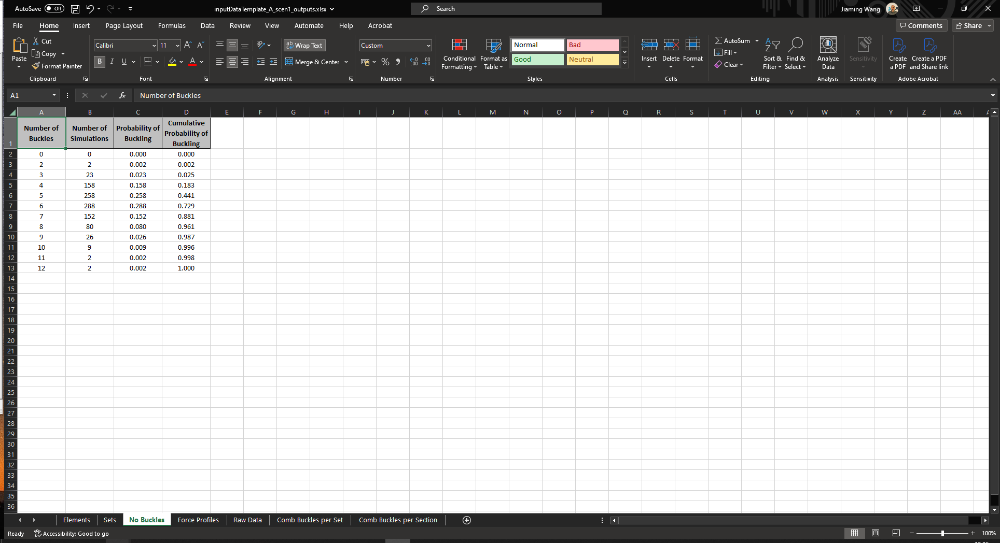Force Profiles: This tab contains the effective axial force profiles.
KP (m): The KP value of the element centroid in the unit of m.
CBF Hydrotest (kN): The concentrated buckling force during hydrotest in the unit of kN.
CBF Operation (kN): The concentrated buckling force during operation in the unit of kN.
EAF Installation [RLT] (kN): The effective axial force during installation in the unit of kN.
EAF Hydrotest (kN): The effective axial force during hydrotest in the unit of kN.
EAF Operation [Pressure Only] (kN): The effective axial force during operation with only pressure applied in the unit of kN.
EAF Operation (kN): The effective axial force during operation in the unit of kN.
EAF Operation [without Buckling] (kN): The effective axial force during operation without buckling in the unit of kN.
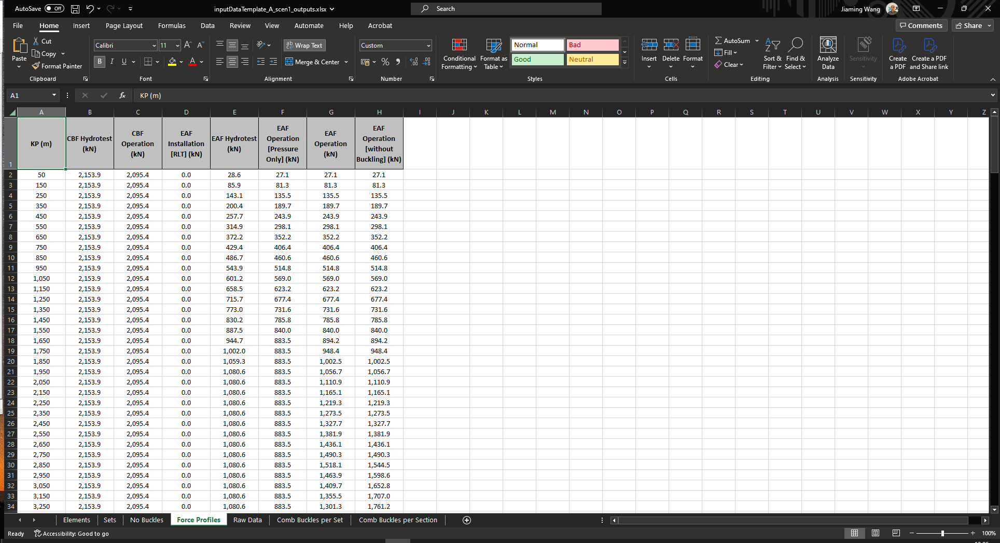Raw Data: This tab contains stochastic VAS and lateral friction factor outputs from each simulation that has triggered buckles.
Simulation Number: The simulation number with buckles for each KP.
KP (m): The KP value of the element centroid in the unit of m.
Section Type: The types of elements (e.g., Spool, Straight, Bend, Sleeper and RCM).
Axial Residual Friction Factor, Operation: The axial residual friction factor during operation.
Lateral Breakout Friction Factor, Operation: The lateral breakout friction factor during operation.
HOOS Factor: The HOOS friction factor.
CBF Operation (kN): The CBF during operation in the unit of kN.
VAS Operation (m): The VAS during operation in the unit of m.
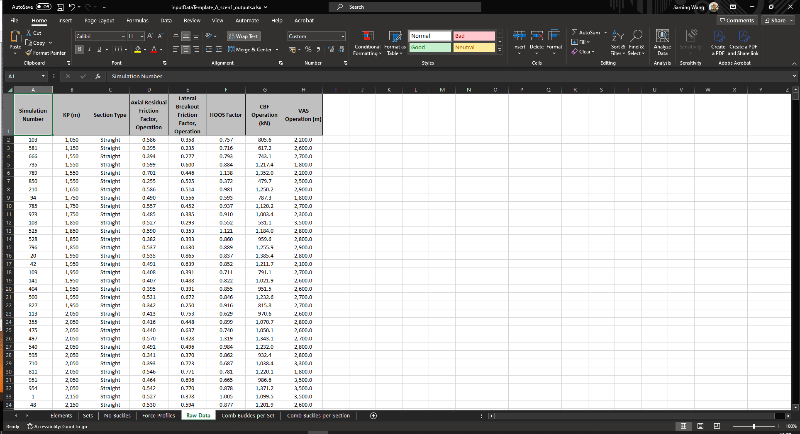Comb Buckles per Set: This tab contains the probability of the most frequent combinations based on post-processing set that has triggered buckles.
Combination Id: The identifier of the most frequent combination with buckles.
Number of Simulations: The number of simulations for each buckling combination.
Probability of Combination: The probabilities of each buckling combination.
Number of Buckles: The number of buckles for each buckling combination.

Comb Buckles per Section: This tab contains the probability of the most frequent combinations based on set number of sections in the route data that has triggered buckles.
Combination Id: The identifier of the most frequent combination with buckles.
Number of Simulations: The number of simulations for each buckling combination.
Probability of Combination: The probabilities of each buckling combination.
Number of Buckles: The number of buckles for each buckling combination.

Output Figures:#
- The name of the two output figures will follow the convention:
{INPUT_FILE_NAME}_{PIPELINE_ID}_scen{SCENARIO_ID}_plots-1.xlsx. For instance,
inputFileTemplate_A_scen1_plots-1.xlsx.{INPUT_FILE_NAME}_{PIPELINE_ID}_scen{SCENARIO_ID}_plots-2.xlsx. For instance,
inputFileTemplate_A_scen1_plots-2.xlsx.- The first output figure contains the following four subplots:
Upper: This subplot contains the effective axial force profiles of the buckled deterministic case or first buckled random case.
Lower Left: This subplot contains the probability distribution of the total number of buckles along the pipeline route.
Lower Centre: This subplot contains the P5 lateral breakout friction factors of the geotechnical design data distribution and the distribution of the lateral breakout friction factors of the actual buckles that have triggered.
Lower Right: This subplot contains the probabilities of buckling and characteristic VAS.
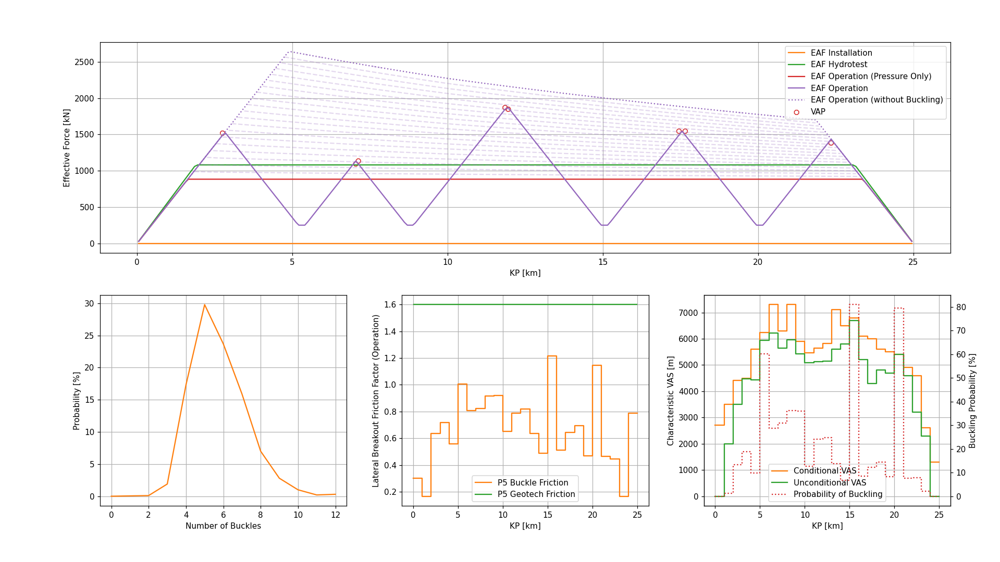- The second output figure contains the following six subplots:
Upper Left: This subplot contains the unbuckled effective axial force profile with the mean axial friction.
Upper Centre: This subplot contains the probabilities of the number of buckles.
Upper Right: This subplot contains the characteristic VAS per kilometre.
Lower Left: This subplot contains the buckled effective axial force profile with the mean axial friction and buckling force.
Lower Centre: This subplot contains the probabilities of buckling per kilometre.
Lower Right: This subplot contains the P5 lateral breakout friction factors of the geotechnical design data distribution and the distribution of the lateral breakout friction factors of the actual buckles that have triggered.
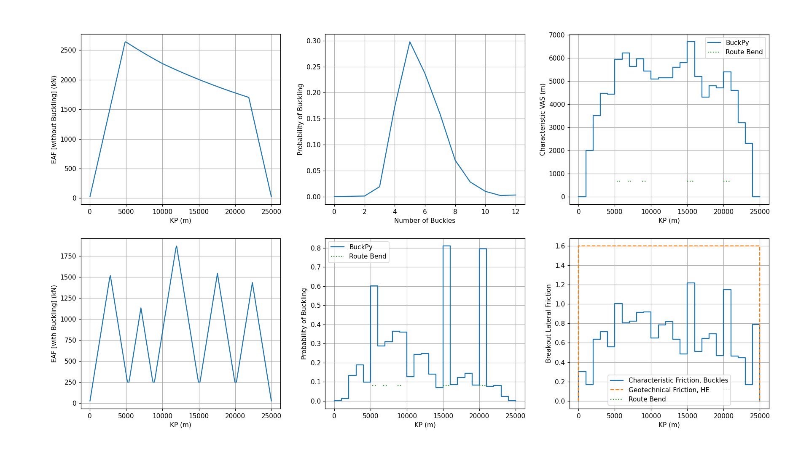
Buckfast Benchmarking#
Results from BuckPy have been benchmarked against results from Buckfast for example A of the Buckfast manual and good agreement has been obtained. The comparison is presented in the following subplots:
Row 1: This subplot compares the probabilities of buckling.
Row 2: This subplot compares the characteristic VAS.
Row 3: This subplot compares the effective axial force profiles determined using the mean axial friction factor and the mean critical buckling force.
Row 4: This subplot compares the number of buckles.
Row 5: This subplot presents the output from BuckPy. In particular, the difference between buckle and geotechnical frictions can be seen.

 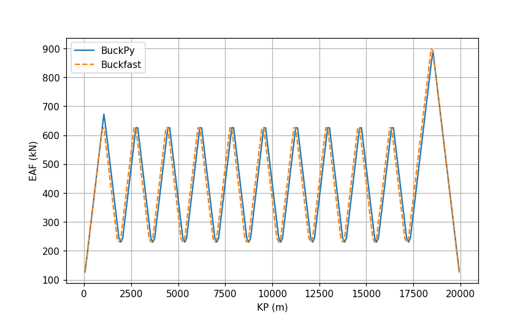
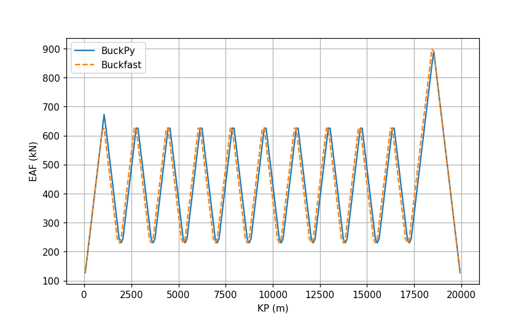

Buckfast File Writers#
Input File Writer#
buckfast_input_file_writer.pyreads the BuckPy input filebuckpy.xlsxand writes the Buckfast input file in the same format as the Buckfast manual. There is an optionDEFAULT_OUTPUTto use the default values or self-defined values when writing the*OUTPUTsection. The benchmark comparison using Buckfast example A is in the folder .//docs//_static//buckfast.
buckfast_A_example.csvis the example A from the Buckfast manual.
buckfast_A_scen1.csvis the Buckfast input file generated from the Buckpy input filebuckpy.xlsx.
Output File Writer - Buckfast Result File#
buckfast_output_file_compiler.pyreads the Buckfast result files and writes the results in a single Excel file. It can also compare the results of Buckfast and BuckPy either for each scenario or for all scenarios. Finally, it can write a summary table Excel file for the selected scenarios.The Buckfast output file has the following tabs:
Elements: This tab contains the probability of buckling and characteristic VAS outputs. This information is taken from the
.out2file.
Centroid of the Element (m): The KP value of the element centroid in the unit of m.
Number of Simulations with a Buckle: The number of simulations with a buckle.
Probability of Buckling: The probability of buckling in the simulation.
Probability of not Buckling: The probability of not buckling in the simulation.
Mean of the VAS (m): The mean of the VAS in the unit of m.
Standard Deviation of the VAS (m): The standard deviation of the VAS in the unit of m.
Minimum VAS (m): The minimum of the VAS in the unit of m.
Maximum VAS (m): The Maximum of the VAS in the unit of m.

Sets: This tab contains the probability of buckling and characteristic VAS outputs. This information is taken from the
.out2file.
Set Label: The identifier of the post-processing set.
Number of Simulations with Buckles per Set: The number of simulations with buckles in each set.
Probability of Buckling: The probability of buckling in the set.
Probability of not Buckling: The probability of not buckling in the set.
Mean of the VAS (m): The mean of the VAS in the unit of m.
Standard Deviation of the VAS (m): The standard deviation of the VAS in the unit of m.
Minimum VAS (m): The minimum of the VAS in the unit of m.
Maximum VAS (m): The Maximum of the VAS in the unit of m.
VAS, Conditional, Rogue (m): The conditional characteristic VAS of rogue buckles in the unit of m.
Characteristic VAS, Unconditional, Rogue (m): The unconditional characteristic VAS of rogue buckles in the unit of m.
VAS, Conditional, Planned (m): The conditional characteristic VAS of planned buckles in the unit of m.
Characteristic VAS, Unconditional, Planned (m): The unconditional characteristic VAS of planned buckles in the unit of m.
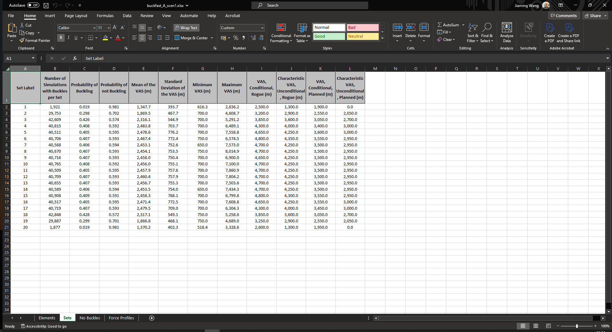No Buckles: This tab contains the probability distribution of the total number of buckles along the pipeline route. This information is taken from the
.out2file.
Number of Buckles: The number of buckles.
Number of Simulations: The number of simulations with buckles.
Probability of Buckling: The probabilities of buckling.
Cumulative Probability of Buckling: The cumulative probabilities of buckling.

Force Profiles: This tab contains the effective axial force profiles. This information is taken from the
.out1file.
KP (m): The KP value of the element centroid in the unit of m.
CBF Hydrotest (kN): The concentrated buckling force during hydrotest in the unit of kN.
CBF Operation (kN): The concentrated buckling force during operation in the unit of kN.
EAF Installation [RLT] (kN): The effective axial force during installation in the unit of kN.
EAF Hydrotest (kN): The effective axial force during hydrotest in the unit of kN.
EAF Operation (kN): The effective axial force during operation in the unit of kN.
EAF Operation [without Buckling] (kN): The effective axial force during operation without buckling in the unit of kN.

Output File Writer - Summary Table File#
The Buckfast output file has the following tabs:
Buckling: This tab contains the probability of buckling and number of buckles results of Buckfast and BuckPy.
Pipeline: Pipeline of the input file analysed.
Scenario: Scenario or sensitivity of the input file analysed.
Scenario Description: The description of each simulation scenario.
Buckfast - Probability of Buckling: The probability of buckling in the Buckfast result.
Buckfast - Number of Buckles - Min: The minimum number of buckles in the Buckfast result.
Buckfast - Number of Buckles - Mode: The most likely number of buckles in the Buckfast result.
Buckfast - Number of Buckles - Max: The maximum number of buckles in the Buckfast result.
BuckPy - Probability of Buckling: The probability of buckling in the BuckPy result.
BuckPy - Number of Buckles - Min: The minimum number of buckles in the BuckPy result.
BuckPy - Number of Buckles - Mode: The most likely number of buckles in the BuckPy result.
BuckPy - Number of Buckles - Max: The maximum number of buckles in the BuckPy result.
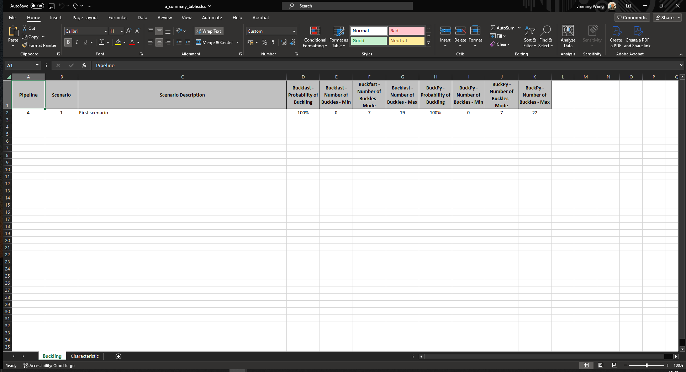Characteristic: This tab contains the probability of buckling and characteristic VAS results of Buckfast and BuckPy. It also contains the characteristic peak lateral friction, and maximum characteristic VAS and friction results of BuckPy.
Pipeline: Pipeline of the input file analysed.
Scenario: Scenario or sensitivity of the input file analysed.
Scenario Description: The description of each simulation scenario.
Element Set - Identifier: The identifier of the post-processing element set.
Element Set - KP From (m): The KP of the start of the pipeline section in the unit of m.
Element Set - KP To (m): The KP of the end of the pipeline section in the unit of m.
Buckfast - Probability of Buckling: The probability of buckling in the Buckfast result.
Buckfast - Characteristic VAS (m): The unconditional characteristic VAS of rogue buckles in the unit of m.
BuckPy - Probability of Buckling: The probability of buckling in the BuckPy result.
BuckPy - Characteristic VAS (m): The unconditional characteristic VAS in the unit of m.
BuckPy - Characteristic Peak Lateral Friction: The unconditional characteristic lateral breakout friction factor.
Buckfast - Max Char. VAS (m): The maximum characteristic VAS of each scenario in the Buckfast result.
BuckPy - Max Char. VAS (m): The maximum characteristic VAS of each scenario in the BuckPy result.
BuckPy - Max Char. Friction: The maximum characteristic friction of each scenario in the BuckPy result.

Saipem Pro-Buck Benchmarking#
The benchmark between BuckPy and Saipem Pro-Buck can be found in the disccusion with Alberto Battistini
BuckPy and Saipem ProBuck Benchmark #35.The Pro-Buck program is a MATLAB-based tool designed to analyze the likelihood of buckling in pipelines subjected to axial loads induced by pressure and temperature. Pro-Buck calculates critical buckling loads (CBL) and provides valuable insights into the critical points where buckling might occur due to excessive compression or other related forces. The algorithm performs Monte Carlo simulations to capture VAS and frictional forces of buckles. The program generates detailed results, including CBL, virtual axial spacing (VAS), and pipeline expansion, which can be visualized using MATLAB’s graphing tools.
The latest revision of Pro-Buck introduces an approach that makes minimal changes to the DNV-RP-F110 recommendations. It uses a Monte Carlo algorithm to determine soil friction distributions at expected buckling locations. This methodology addresses limitations in the DNV-RP-F110 approach by separately sampling lateral friction and Out-of-Straightness (OOS) factors, leading to significant cost savings and improved design reliability.
Pro-Buck is a powerful tool for predicting buckling risks and ensuring the structural integrity of pipelines under various conditions.
General information about the pipeline for Benchmarking:
155 approx km Pipeline with straight sections and route bends
7 pipe set
9 Friction set
The two codes yield identical results in the following three figures:
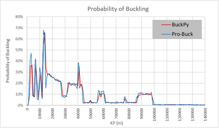
Probability of buckling versus KP
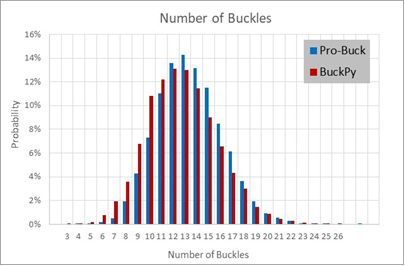
Number of Buckles
Conditional Friction Factor versus KP